02.集合通信关键作用#
Author by: SingularityKChen
随着深度学习模型和分布式训练规模的爆炸式增长，高效的集合通信已经成为提升训练和推理性能的关键因素之一。 为此，业界和学术界开发了多种集合通信库，如 NVIDIA NCCL、Huawei HCCL、Alibaba ACCL、Meta Gloo、Intel oneCCL 以及 Microsoft MSCCL 等。 这些库针对不同硬件和应用场景进行了优化，但在架构设计上存在共性。 本文将综述这些主流集合通信库的架构设计，抽象一个通用的 xCCL (XXXX Collective Communication Library) 模块化架构，其包括通信原语支持、调度与拓扑感知、计算通信解耦机制以及与深度学习框架的接入方式等方面。 随后，我们将分析不同通信原语（如 AllReduce、AllGather、All-to-All、点对点 Send/Recv）在典型并行策略（数据并行、张量并行、专家并行等）下的通信量估算方法，并探讨通信开销对训练和推理效率的影响。
AI 与通信关系#
本节简要回顾神经网络及其训练过程的基础计算，并回顾近年来 AI 训练和推理过程中涉及的分布式和并行计算模式。
从单卡到多卡通信#
神经网络训练的过程是神经网络模型通过梯度下降算法优化参数的过程。在单卡训练中，神经网络模型的训练过程主要依赖于单个 GPU 卡的计算能力。
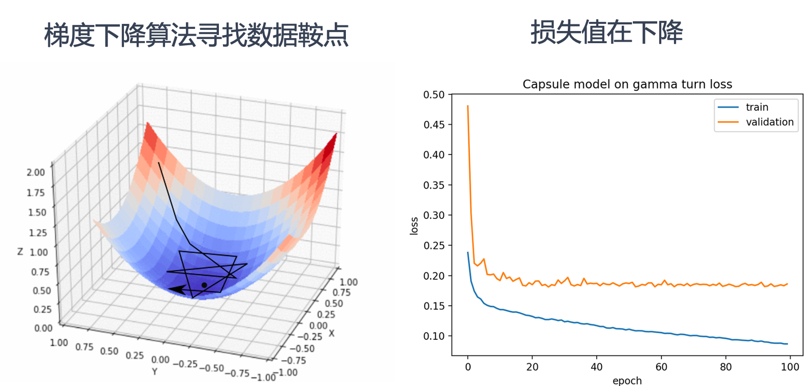
上图左侧展示了梯度下降算法在三维空间中寻找数据鞍点的过程。梯度下降算法通过不断调整参数，沿着损失函数的负梯度方向移动，以最小化损失函数。图中的三维曲面表示损失函数，黑色线条表示梯度下降算法的路径，最终目标是找到损失函数的最小值点，也称为鞍点。
上图右侧展示了训练过程中损失值的变化情况。横轴表示训练的轮数（epoch），纵轴表示损失值。蓝色曲线表示训练集上的损失值，橙色曲线表示验证集上的损失值。随着训练轮数的增加，损失值逐渐下降，表明模型在不断优化，性能在提升。
左侧图中梯度下降算法逐步找到损失函数的最小值点，对应右侧图中损失值随着训练轮数的增加而逐渐降低。
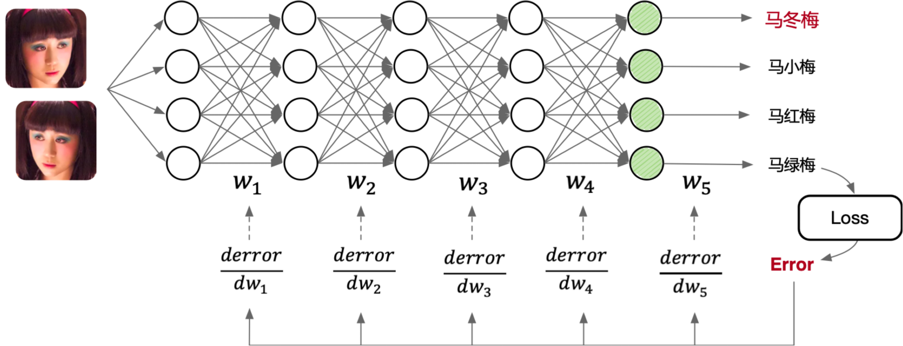
如上如图所示，一个典型的多层前馈神经网络包含输入层、多个隐藏层和输出层。输入层接收图像数据，这些图像数据通过网络的各个层进行处理。每个层之间通过权重矩阵（\(W_1\), \(W_2\), \(W_3\), \(W_4\), \(W_5\)）连接，数据在前向传播过程中经过线性变换和非线性激活函数处理，最终在输出层生成预测结果。
训练过程中，计算预测结果与真实标签之间的误差（Loss），并通过反向传播算法将误差逐层传递回网络。在反向传播过程中，计算每一层权重矩阵的误差梯度（\(\frac{derror}{dw_1}\), \(\frac{derror}{dw_2}\), \(\frac{derror}{dw_3}\), \(\frac{derror}{dw_4}\), \(\frac{derror}{dw_5}\)），并根据这些梯度更新权重矩阵，以最小化损失函数。
上述整个过程都在单个 GPU 卡上完成，计算资源和数据处理均依赖于该卡的性能。单卡训练适合中小规模的模型和数据集，但对于大规模模型和数据集，单卡的计算能力可能成为瓶颈，这时就需要引入多卡并行训练来提升效率。
分布式训练与多卡并行#
在单卡训练的基础上，多卡并行训练可以显著提高训练速度和效率。多卡并行训练通过将模型和数据分布到多个 GPU 卡上，利用多个卡的计算能力同时进行训练，从而加速模型的收敛。
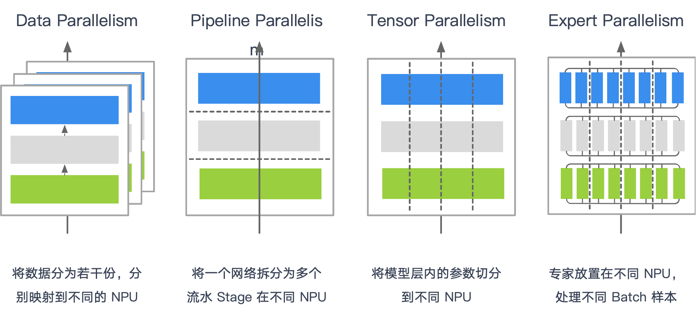
不同并行策略，本质区别在于where: 哪些张量需要跨卡通信、when: 何时需要通信、what: 通信的粒度。这直接决定使用的集合通信原语与传输数据量。
分层/分级与就近通信几乎是所有大规模集群的共同优化。
数据并行 Data Parallelism#
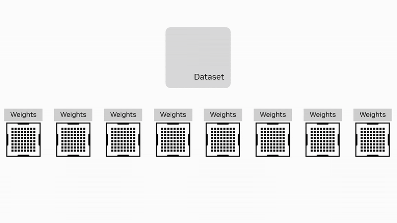
数据并行是最常用的并行策略之一。在这种策略中，数据集被分割成多个子集，每个子集分配给不同的计算卡。每个卡上都保存模型的完整副本，并独立计算梯度。计算完成后，通过集合通信算法 AllReduce 将所有卡的梯度汇总，计算出全局梯度，并更新模型参数。
如果把每个 rank 的梯度大小记作 \(G\)，那么在典型的环（Ring）或 Halving-Doubling 实现里，每个 rank 的总发送量都接近 \(2G \cdot \frac{N-1}{N}\)；差别主要在步数：Ring 需要 \(2(N-1)\) 步，Halving-Doubling 需要 \(2\log_2 N\) 步。
实践中，我们不会等到所有梯度一次性聚合，而是以 PyTorch 的 bucket 为单位分批发起通信：大 bucket 有利于带宽利用，代价是增大首包延迟；小 bucket 则更容易与计算重叠、但容易落入小包低效的陷阱。
拓扑上，节点内优先走 NVLink/NVSwitch 等高带宽链路，跨节点再通过 RDMA 做分层/分级 AllReduce。
流水并行 Pipeline Parallelism#
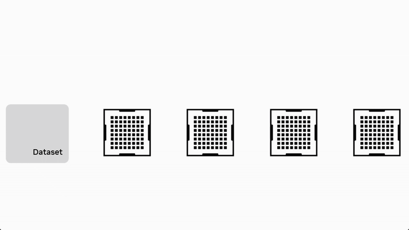
流水并行将模型按层分为多个连续阶段（Stage），每个阶段放置在不同设备上。数据以流水线方式在阶段之间流动，在前向阶段通过集合通信原语 Send/Recv 进行数据传输，全局梯度同步还需要用到集合通信原语 AllReduce。
流水并行的优势在于计算与通信的重叠，能够同时并行处理模型不同部分的数据，减小单阶段计算压力，但需合理设计 micro-batch 数与调度以减少通信等待。
张量并行 Tensor Parallelism#
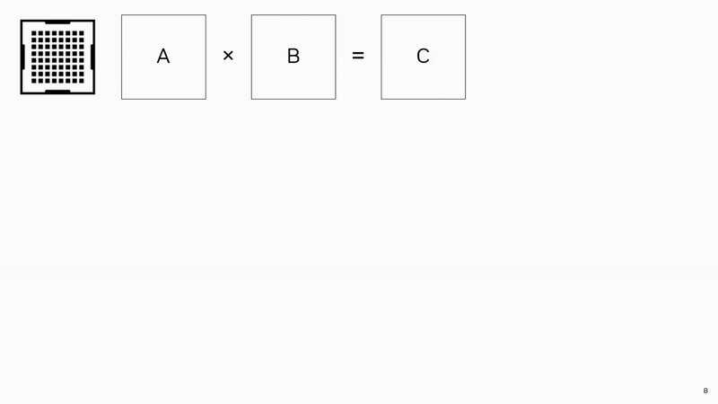
张量并行适用于模型规模特别大的场景，它将单个模型层内的大矩阵或张量计算分割到多个设备上并行处理。计算完成后，使用 AllGather / ReduceScatter 汇总结果。
专家并行 Expert Parallelism#
专家并行适用于专家混合模型（Mixture of Experts，MoE），将多个专家分别放置在不同设备，每个设备处理特定数据子集。计算时，每个设备要把一部分 token 按 top-k 路由到选中的专家所在设备，各专家模型独立运算后，通过 All2All 获得计算结果。通信量与路由分布强相关，top-k 与 capacity factor 都会改变 All2All 的有效带宽。
由于分流粒度是 token，这类通信对“小包密集”和负载不均非常敏感，工程上常结合分层 All2All、路由聚簇与 padding 来稳定吞吐。
多维并行 Multi Parallelism#
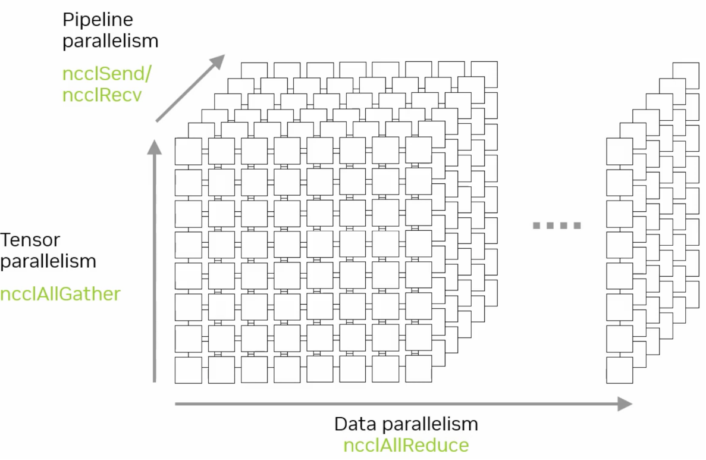
多维并行组合了数据、流水、张量与专家并行等策略，并据此组合 All2All、AllGather、AllReduce 与 P2P，以适应负责的训练场景。
FSDP 前向按需 AllGather 权重分片，反向通过 ReduceScatter 回收梯度分片，从而把常驻显存与通信量一起控制在 shard 粒度；
长序列训练则围绕上下文重组，以 AllGather 和 AllReduce 组合，在跨卡恢复 attention 所需的信息。
我们发现跨卡共享数据的特征非常重要：共享数据得越大，通信量越大；共享数据离得越近，可用带宽越高。 算法上，Ring 与 HD 在单位数据上的总通信量接近，但步数差异使得它们在小包/高延迟和超大包/带宽饱和的两端各有优势。 系统上，分层 AllReduce、就近通信与合适的 bucket 粒度，几乎是所有大规模训练稳定扩展到多机多节点的共同秘诀。
集合通信与分布式#
!!!!!!!!!!!分布式训练的内容，重点的是讲解各种并行，对集合通信的影响，特别是深入，一定要深入，例如传输多少数据量。不同的集合通信的源语具体对模型训练和推理的影响。
xCCL 基本架构#
!!!!!!!写文章是为了更加深入理解这个知识点的原理，这里 xCCL 基本架构，没有展开，到底 xCCL 有哪些模块，有哪些内容。这块要自己深入 看不同的 xCCL 库，然后抽象出来一个共性的架构，这是我强调的来源于视频的内容，但是要比视频的内容深入很多很多的原因
xCCL（XXXX Collective Communication Library）架构源自于高性能计算（HPC）的集合通信架构，经过优化和演进，以满足当前 AI 场景的特殊通信需求。本节从 HPC 和 xCCL 通信架构对比介绍，展示二者的异同。
HPC 到 AI 通信栈基本架构#
传统 HPC 集合通信库和 xCCL 的基本框架均可抽象为三层：适配层、集合通信业务层和集合通信平台层。
适配层提供通信域管理以及集合通信算子接口。集合通信业务层实现集合通信和点对点通信的具体逻辑。集合通信平台层提供硬件资源和底层网络。
在经典 HPC 中，MPI/OpenSHMEM/UCX 面向传统的高性能计算任务，通信模式以阶段性、批式居多；而在 AI 训练里，高频次的梯度同步、参数/激活的分片汇聚、token 级路由使通信更贴合模型结构。
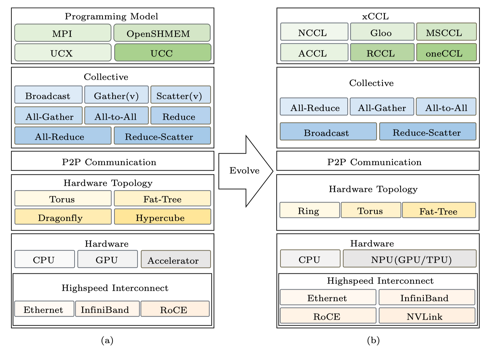
因此栈内自上而下发生了迁移。编程模型从 MPI 走向 NCCL/Gloo/oneCCL/MSCCL 等面向深度学习的库。通信原语以 AllReduce / AllGather / ReduceScatter / All2All / P2P 为主，与并行方式对应。拓扑结构从超算常见的 Hypercube/Dragonfly 转向更贴合深度学习训练通信场景的 Ring/Torus/分层 Fat-Tree。硬件端引入 NVLink/NVSwitch、RoCE/IB RDMA 与 NPU/TPU 特有的片内外直连，代替部分传统 PCIe 与 RoCE 通道，显著降低节点内的同步成本，同时通过分级/就近通信降低跨节点的同步成本。
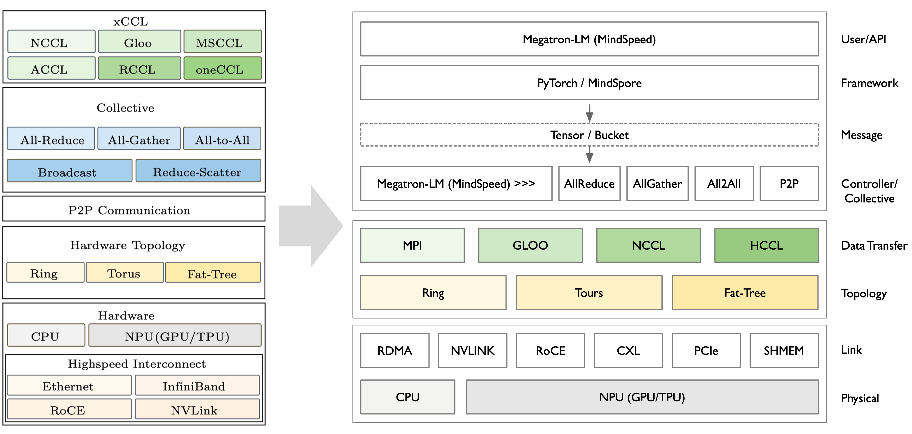
从用户视角看，xCCL 是“通信执行”的统一入口：上承 PyTorch 与分布式控制器（Megatron-LM/MindSpeed），下接 ProcessGroup（NCCL/HCCL/Gloo…）与物理互联（RDMA、NVLink、RoCE、PCIe/CXL、SHMEM）。训练过程中，框架把张量放入 bucket，控制器在后台协调各 rank 的时序与分组，xCCL 则在独立的通信流中执行对应原语，并通过 event 与同步点把结果安全地交回计算流。这样既能充分占满节点内高带宽链路，也便于用分层/分级在跨节点时减少长尾与抖动。
xCCL 基本架构#
如下图 HCCL 所示，xCCL 集合通信库软件架构分为适配层、集合通信业务层和集合通信平台层，包含框架适配、通信框架、通信算法和硬件资源交互四个模块。
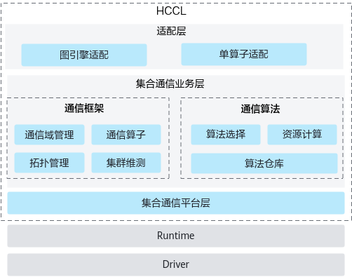
适配层提供通信域管理及通信算子接口，对接 PyTorch、TensorFlow 等深度学习框架，掩盖下层实现细节。
集合通信业务层包含通信框架与通信算法两个模块。通信框架模块负责通信域管理，识别和感知机器拓扑逻辑，协同通信算法模块完成最优算法选择，协同通信平台模块完成资源申请并实现集合通信任务的下发。通信算法模块承载集合通信算法，实现点对点通信的具体逻辑，提供特定集合通信操作的资源计算，并根据通信域信息完成通信任务编排。
集合通信平台层提供硬件资源和底层网络，并提供集合通信的相关维护、测试能力。
适配层：接入框架与分布式加速库#
!!!!!!!!! 太浅了，到底 xCCL 这些库，是如何接入 pytorch 这个框架的？代码和架构图示例，深入去学习了解。
xCCL 的适配层是连接 xCCL 底层通信能力与上层深度学习框架、分布式加速库的桥梁。其核心目标是解耦通信逻辑与业务逻辑，让框架无需关注 xCCL 底层的硬件细节和算法选择，只需通过统一接口调用通信功能；同时让 xCCL 的高性能特性能无缝融入上层训练和推理流程。
训练框架（如 PyTorch）上层接管“何时、对哪些张量、以什么粒度发起通信”，最终仍通过 torch.distributed 的 ProcessGroup 调用底层通信库（NCCL/HCCL/Gloo）：
上层（如 DeepSpeed / Megatron-LM / ColossalAI / MindSpeed）
负责并行策略与张量切分，组织 bucket，决定 AllReduce/AllGather/All2All/P2P 的触发时机与先后顺序。
通过 reducer/hook 把 grad bucket 推入队列，调度后台循环线程。
中间（
PyTorch torch.distributed）将高层请求转为
ProcessGroup::collective调用，在通信流xcclStreams上排队执行，并用 event 在计算流与通信流之间做依赖同步，确保先写后读/先聚合再使用。
底层（NCCL/HCCL/Gloo/oneCCL/MSCCL）
依据拓扑与算法（Ring/Tree/HD/2D-Torus）完成具体的路由与搬运，并利用 GPU/NPU 的 DMA/核外执行能力与 SHARP/在网计算等优化实现高吞吐。
加速库的加速，大多来自粒度控制（分片/bucket）、触发时机（重叠/合并）、分层通信（节点内优先）与对底层 ProcessGroup 的正确使用，而非绕开 NCCL/HCCL 另起炉灶。
集合通信业务层：通信框架和通信算法实现#
集合通信业务层，包含通信框架与通信算法两个模块。
通信框架负责通信域管理，通信算子的业务串联，协同通信算法模块完成算法选择，协同通信平台模块完成资源申请并实现集合通信任务的下发。
xCCL 会根据系统配置、网络拓扑、数据量动态选择算法，例如 NCCL 的 All-Reduce 对小数据用双二叉树算法、大数据用环形算法，MSCCL 的 All-Reduce 支持All-Pairs、Hierarchical 等多算法切换。
通信算法作为集合通信算法的承载模块，提供特定集合通信操作的资源计算，并根据通信域信息完成通信任务编排。不同 xCCL 的通信算法实现有所侧重，其核心源于底层硬件适配目标、上层应用场景优化方向和灵活性设计。

NCCL 在核心通信算子的算法实现上聚焦英伟达 GPU 的性能优化，针对性极强。其各通信原语基于二叉树算法和环形算法实现，分别适配小数据量和大数据量的情况。RCCL 作为 AMD 对 NCCL 的兼容实现，算法逻辑与 NCCL 类似。
MSCCL 以算法的灵活性和场景适配性为核心优势，支持通过 DSL 根据具体硬件拓扑和业务场景定制优化算法。其主要基于 All-Pairs、Hierarchical 和环形算法优化了 All-Reduce 和 All-to-All 算子。
Gloo 的算法实现兼顾 CPU 与 GPU 场景的通用性。其通信原语基于环形、分块环形、减半倍增、点对点交换和 BCube 多种算法。
集合通信平台层：提供硬件资源和底层网络#
xCCL 的集合通信平台层是其核心底层组件，核心目标是直接对接硬件设备与网络互联，最大化通信性能。该层的设计决定了 xCCL 对特定硬件拓扑和网络的适配能力，其实现高度依赖厂商的硬件特性与通信协议优化。
NCCL 利用英伟达 GPU 的软硬件特性，基于 CUDA Stream 优化并行性、利用 NVLink 和 GPUDirect 优化 GPU 间传输，跳过 CPU 中转。
RCCL 支持 Infinity Fabric 和 xGMI，实现 AMD GPU 集群的低延迟通信，同时兼容 PCIe 和 GPUDirect RDMA。
Gloo 支持 CPU 间通过 TCP/RoCE/InfiniBand 通信，可通过 MPI 或自定义 rendezvous 机制管理 CPU 节点连接。
oneCCL 针对英特尔生态，支持 Xeon CPU、Arc GPU、FPGA 的协同通信，底层基于 Intel MPI 和 libfabric 库，提供 Level 0 硬件直接访问接口，并针对英特尔硬件的多级缓存设计了数据预取机制，减少 GPU 与 CPU 间的数据拷贝延迟。
ACCL 则针对阿里云的异构网络环境，采用多 NIC 绑定策略，将跨节点通信分散到多个网卡，提升并行性。
计算与通信解耦#
在大模型训练中，集群算力利用率（MFU）直接决定训练周期，而传统 “计算 - 通信串行” 模式是制约 MFU 的核心瓶颈。其根本问题在于强同步依赖：每一层网络计算出梯度后，必须等待该梯度通过 AllReduce 等集合通信完成跨节点同步，才能启动下一层计算。
以 6710 亿参数的 DeepSeek-V3 为例，其包含 61 个 Transformer 层，且第 4 至 61 层为 MoE 架构，这类架构天然存在专家数据跨节点调度需求，通信压力显著高于密集模型。若采用传统串行模式，按实测数据单层级计算耗时 10ms、跨节点通信耗时 3ms 计算，每层总耗时将达 13ms，且 MoE 架构未优化时计算：通信比可降至 1:1，大量 GPU 计算单元因等待专家数据传输陷入闲置，2048 卡集群的算力浪费问题尤为突出。
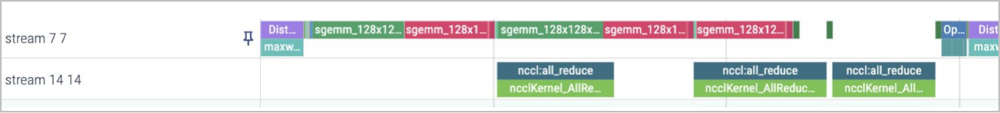
上图 Stream 77 和 14 分别是计算和通信的进程。!!!!!!请继续补充，说明原理，建议换一个图，自己做个 profiling，然后截图。
为解决这一问题，xCCL 采用计算与通信解耦的策略，将计算和通信两个过程独立执行，分别优化。通过性能优化策略减少通信频率，提升集群训练性能（HFU/MFU）并防止通信等待时间过长导致的“假死锁”问题。xCCL、NCCL 等集合通信库的 “计算与通信解耦” 策略，支撑千卡 / 万卡级集群高效运行，成为大模型工程化落地的关键技术基石：
异步 Stream 并行调度：依托 GPU Stream 实现计算与通信的物理隔离。计算 Stream 无需等待上一层通信完成，可连续推进下一层 FFN 与 MLA 模块计算；通信 Stream 则异步抓取已就绪的梯度与特征数据，通过 Ring AllReduce 协议后台传输，使总耗时从 “计算 + 通信” 逼近纯计算耗时。
通信粒度优化：解耦后可灵活合并通信任务，例如累积多层梯度后执行一次 AllReduce，将通信次数从 “每层 1 次” 降至 “每 N 层 1 次”，减少通信启动开销与带宽占用，进一步降低通信对流程的影响。
死锁防护：传统串行中单个节点通信阻塞会导致全集群等待（“假死锁”）；解耦后计算与通信独立，局部通信异常时，其他节点计算仍可推进，通信模块可重试容错，避免全集群挂起。
总结与思考#
通过本章的学习，我们知道并行方式决定原语，原语决定通信量与拓扑选择，并说明了 xCCL 在框架调度和通信执行之间如何通过 bucket、分层与流/事件机制达成计算-通信的高效重叠。理解这些映射关系，是扩大模型规模、提升集群 MFU、降低网络成本的重要前提。
本节视频#
参考与引用#
HCCL概述 HCCL集合通信库-CANN商用版8.2.RC1开发文档-昇腾社区. Available at: https://www.hiascend.com/document/detail/zh/canncommercial/82RC1/hccl/hcclug/hcclug_000001.html#ZH-CN_TOPIC_0000002370191085__section17991201643111 (Accessed: 13 October 2025).
Weingram, A. et al. (2023) ‘xCCL: A survey of industry-led collective communication libraries for deep learning’, Journal of Computer Science and Technology, 38(1), pp. 166–195. doi:10.1007/s11390-023-2894-6.